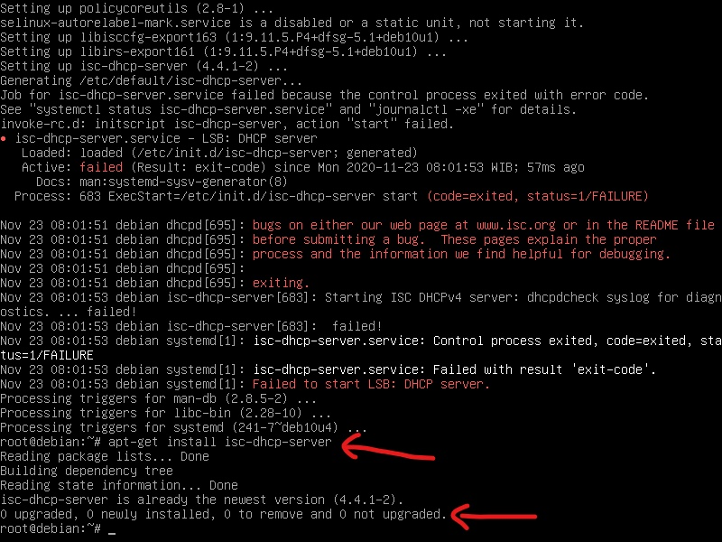
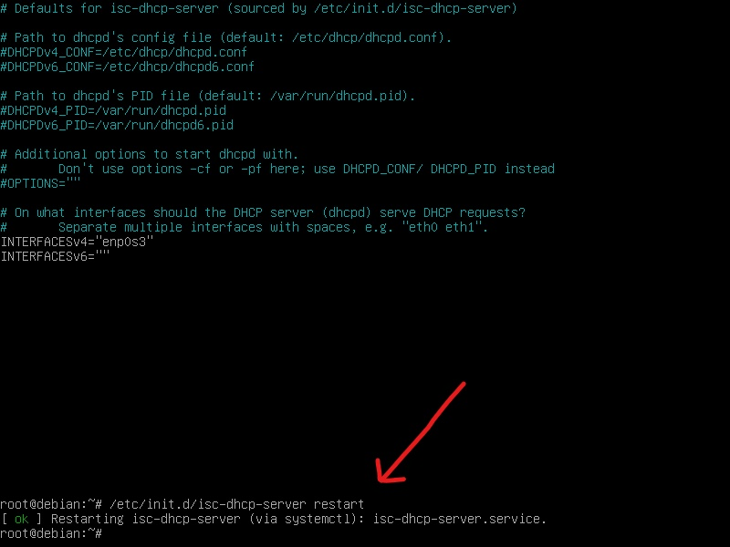
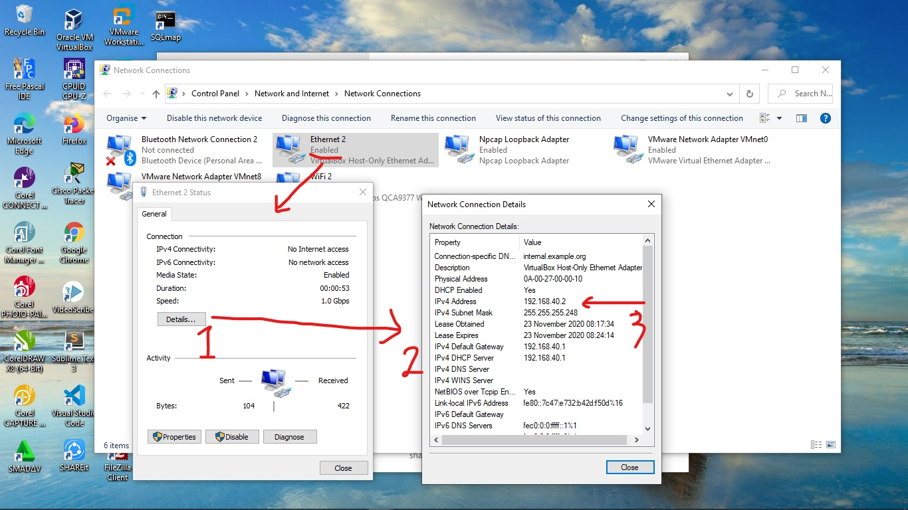

Dynamic Host Configuration Protocol atau DHCP Server adalah Protocol yang berbasis Client/Server yang digunakan untuk mempermudah pengalokasian IP Address pada suatu Jaringan konputer. Untuk perangkat yang memberikan IP Address disebut sebagai DHCP Server, sedangkan untuk perangkat yang meminta IP Address disebut DHCP Client.
DHCP Server merupakan solusi yang tepat digunakan pada jaringan komputer, dengan menggunakan DHCP Server Anda tidak perlu lagi mensetting IP Address satu per satu pada PC Client hal ini mempermudah kita sebagai Admin Jaringan komputer.
Fungsi DHCP Server adalah sebuah layanan yang dapat memberikan secara automatis memberikan IP Address dan informasi Lain seperti Netmask, IP Gateway, IP DNS, Nama domain dll kepada Host yang memintanya.
Cara Installasi dan konfigurasinya cukup mudah. Akan saya berikan sebuah tutorial installasi dan konfigurasinya dan saya di sini menggunakan software VirtualBox dengan network adapter Virtual Host Only. Oke, Langsung saja ke tutorialnya.
Langkah-Langkah Instalasi dan Konfigurasi DHCP Pada Debian Server
1. Langkah pertama, login ke debian dengan menggunakan user root.
2. Setelah login dengan menggunakan user root, kita akan mengkonfigurasi IP untuk Server Debian-nya. Ketikkan perintah “nano /etc/network/interfaces” untuk masuk ke konfigurasi IP nya. Kemudian tulis konfigurasinya seperti gambar dibawah ini. Jika sudah keluar konfigurasi dengan menekan tombol Ctrl+O untuk menyimpan dan Ctrl+X untuk keluar konfigurasi.
3. Kemudian restart networknya dengan perintah “/etc/init.d/networking restart”, kemudian cek IP nya dengan perintah “ip a”
4. Setelah itu, masukkan DVD 2 ke PC Debian, Kemudian ketikkan perintah "apt-cdrom add". Setelah DVD berhasil dimasukkan kemudian tekan Enter. Selanjutnya update dengan perintah “apt-get update”.

5. Selanjutnya install DHCP Server dengan perintah "apt-get install isc-dhcp-server" atau "apt install isc-dhcp-server", jika ada pertanyaan [y/n] tekan huruf “y” di keyboard kemudian enter. Tunggu sejenak dan sampai proses instalasi selesai.
6. Untuk memastikan DHCP sudah terinstal atau belum, kita masukkan perintah “apt install isc-dhcp-server”. Jika berhasil maka akan ada tulisan 0 upgrade, 0 newly installed, 0 to remove, and 0 not upgrade.
7. Setelah selesai menginstall DHCP Server-nya, sekarang kita masuk ke konfigurasi DHCP Servernya. Untuk masuk ke konfigurasi DHCP Server-nya, kita ketikkan perintah “nano /etc/dhcp/dhcpd.conf”. Lalu, untuk contoh gambarnya seperti dibawah ini. Gambar ini adalah konfigurasi defaultnya.
8. Kemudian kita akan mengubah konfigurasinya seperti contoh gambar di bawah ini yang diberi kotak merah baris 50-58. Jangan lupa hapus tanda pagar (#) nya. Kemudian setelah selesai dikonfigurasi, kita simpan konfigurasinya dengan tombol Ctrl+O dan keluar konfigurasi dengan tombol Ctrl+X.
9. Kemudian kita konfigurasi interface pada “nano /etc/default/isc-dhcp-server”. Kemudian pada INTERFACESv4 kita isikan dengan interface yang ada di server debian, karena di server debian saya interface nya enp0s3 jadi saya masukkan enp0s3.
10. Jika sudah, keluar konfigurasi dan restart DHCP-nya dengan perintah “/etc/init.d/isc-dhcp-server restart”. Jika ada tulisan OK berarti konfigurasi nya berhasil, tapi jika FAILED coba cek lagi pada konfigurasi IP atau konfigurasi DHCP nya. Untuk merestart DHCP Server bisa juga dengan perintah "systemctl restart isc-dhcp-server.service".
11. Cek status service dhcp server dan pastikan service berjalan dengan baik dengan perintah "systemctl status isc-dhcp-server.service". Jika sudah berjalan dengan baik seperti pada gambar dibawah ini, silahkan tekan CTRL + C untuk keluar dari status DHCP Server itu.

Pengujian DHCP Server
12. Kemudian langkah selanjutnya yaitu ke proses pengujian DHCP Server. Sebelum melakukan pengujian kita buka “Task Manager” terlebih dahulu pada client windows dengan cara ketik Task Manager di bagian bawah pencarian windows. Setelah terbuka, cari “VirtualBox DHCP Server” di bagian Process. Setelah ketemu batalkan prosesnya dengan cara klik kanana lalu pilih “End Task”. Sebagai contoh, perhatikan gambar dibawah ini. Kemudian jika sudah tutup jendela task manager.
13. Lalu kita masuk ke “Network and Sharing Center” pada client windows. Disitu, klik pada bagian “Change adapter setting”. Kemudian kita klik yang “VirtualBox Host-Only Adapter.” Kemudian kita ubah konfigurasi IP nya menjadi seperti gamabar dibawah ini. Jika sudah, klik “Ok” lalu tutup semua jendela konfigurasinya. Setelah selesai mengkonfigurasi ulang IP-nya menjadi request IP otomatis dari DHCP Server atau meminta IP langsung dari DHCP Server.
14. Kemudian kita “Disable” network adapter di VirtualBox tadi.
15. Setelah “Disable” lalu kita “Enable” lagi. Tunggu sejenak, biarkan client windows meminta IP otomatis dari Server DHCPnya. Jika sudah mendapatkan IP otomatis, maka detail konfigurasi IP Client-nya akan menjadi seperti gambar dibawah ini yang diberi no.3
16. Jika hasilnya seperti gambar diatas, berarti service DHCP server yang kita buat tadi telah selesai dan berjalan dengan baik. Ok, selamat mencoba!
Oke Demikian kira-kira tutorial Cara Install DHCP Server di Debian 10 ini. Semoga bermafaat untuk kita semua. Silahkan Share Jika kalian merasa postingan ini bermanfaat. Sekian & Terimakasih Salam.